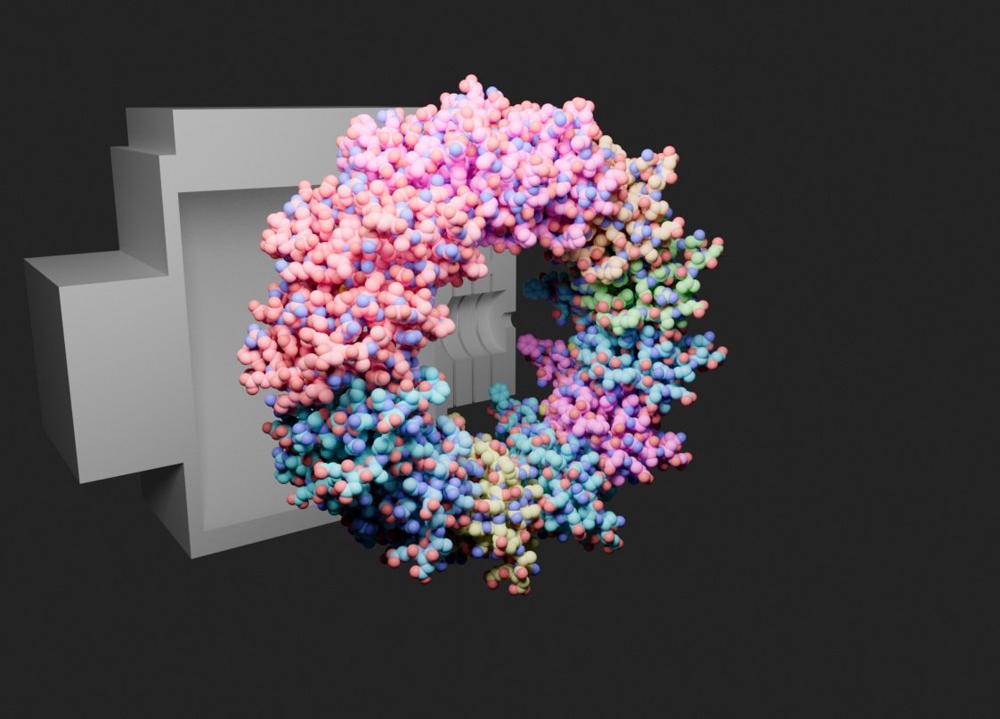
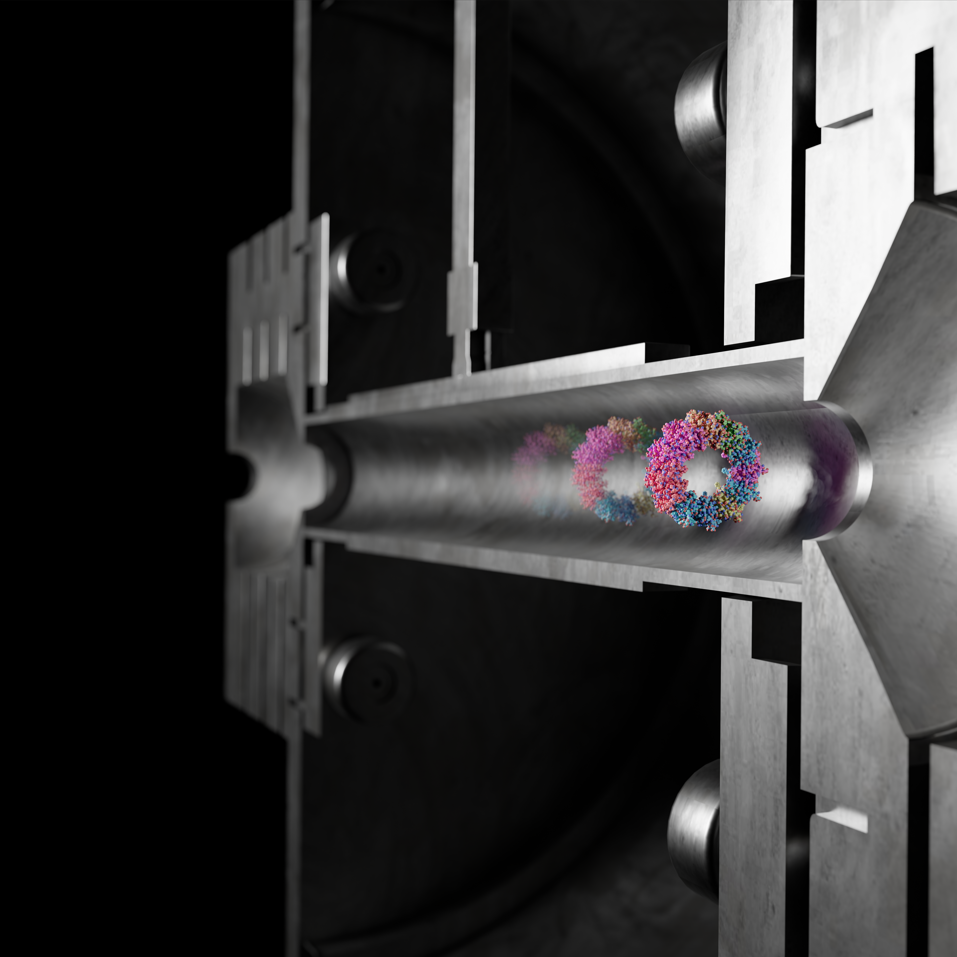

JACS Cover Art: Bacterial Proteasome Activator
I created a molecular illustration for a research project from the Vahidi Lab at the University of Guelph that was submitted for consideration as cover artwork for the Journal of the American Chemical Society. The project focused on the bacterial proteasome activator (Bpa) and used the PDB structure 8RGX.
I modeled the mass spectrometry machine from reference photographs and built the scene around the protein structure. I imported the protein from the PDB, then worked on the protein materials and colours, lighting, volumetrics, and the overall composition. I also UV-unwrapped the modeled machine so I could control its surfaces and materials more precisely.
I built separate scene layers for the machine, protein, and hologram so they could be adjusted independently. The machine and background were rendered in Eevee, while the protein was rendered in Cycles for more detailed lighting and reflections. I also incorporated a scientific graph supplied by the research team and revised the artwork based on their feedback before preparing the final high-resolution version.



Project Note: This was my first molecular visualization project created directly with a research lab, including developing the visual concept, responding to scientific feedback, and preparing the final artwork for journal submission.
Visualizing the Conformational Ensemble of Phosphorylated 4E-BP2
I wanted to explore how an NMR structure can represent multiple possible conformations instead of one fixed shape. PDB 2MX4 is a solution NMR structure of phosphorylated human 4E-BP2 containing 20 deposited conformers. I used these conformers as discrete structural models and built an animation around the differences between them.
I also created a procedural colour field using global coordinates, so the colour of different regions changes as their position changes between conformers. This makes the structural differences easier to see while keeping the colour variation connected to the molecule's position in space.
For the final look, I used subsurface scattering and procedural roughness variation to move away from a basic plastic material and create a more detailed, photorealistic appearance. The visual style is intentionally artistic, while the underlying structural models come from the deposited PDB entry.
Project Note: The animation is a visual representation of the differences between the deposited conformers, rather than a claim that the protein follows that exact sequence as a real-time trajectory.
Animating Different States of F1Fo-ATP Synthase
I used three different PDB structures of mammalian F1Fo-ATP synthase to create a visualization of how its structure changes between different states. I brought the structures into Blender using Molecular Nodes and created a smooth transition between them.
I also built the surrounding lipid membrane procedurally with Geometry Nodes instead of modeling every lipid by hand. I used subsurface scattering to give the lipid heads a slightly translucent appearance and added a low-density volume around the scene to create more environmental depth.
One of the main technical challenges was making the animation loop smoothly. I synchronized the structural animation, membrane movement, and volumetric effects so the final frame connects back to the first without an obvious jump.


Blender Note: I used procedural systems for the membrane and environment so that I could control the animation without manually placing and animating every molecule.

Animating Molecular Dynamics of the Human TrkA Receptor
For this project, I worked with a 500-frame molecular dynamics simulation of the human TrkA receptor inside a lipid membrane. I wanted to make the movement in the simulation easier to see while keeping the protein and membrane visually clear.
I used a Geometry Nodes setup to instance the lipids instead of building each one separately. I also adjusted the material and lighting to give the membrane a translucent appearance while keeping the moving protein easy to see.
Blender Note: I found that low-poly Ico Spheres with smooth shading worked better for the membrane when using subsurface scattering in Cycles, while also keeping the scene manageable to render.
Building a Membrane Around the Human Secretin Receptor
I wanted to show a membrane protein in a more realistic environment instead of displaying it by itself. I used the human secretin receptor structure from the PDB and used the OPM database to help position the protein correctly relative to the membrane.
I then created the membrane procedurally using Blender Geometry Nodes. The system scatters lipid molecules across a curved surface and gives them controlled movement, creating a dynamic look without using a full physics simulation. The protein remains anchored while the surrounding lipid tails move.

Blender Note: Geometry Nodes let me create the membrane procedurally, making it easier to control the density and movement of the lipids without making the Blender scene unnecessarily heavy.
Cinematic Rendering of Human Lactoferrin
I wanted to experiment with a more artistic way of presenting a molecular structure, so I imported human lactoferrin from UCSF ChimeraX into Blender and built a glass-like material around the protein.
I used a custom material to control how light passes through the structure, then built a dark studio environment with rim lighting to highlight the outer shapes of the alpha-helices and beta-sheets. The animation was rendered in Cycles for more realistic reflections and light behavior.

Blender Note: This project was mainly an experiment in molecular rendering and lighting. I wanted to see how far I could push a molecular structure toward a cinematic visual style.
Exploring Imatinib Binding to ABL1 Kinase
I wanted to explore how a drug can interact with its target protein, so I looked at the crystal structure of the ABL1 kinase domain bound to imatinib (Gleevec). I used UCSF ChimeraX to isolate the binding region and examine how the drug sits inside the protein.
I also used ChimeraX measurement tools to examine a hydrogen bond between imatinib and the Thr315 residue. Thr315 is an important position associated with imatinib resistance, which made the structure especially interesting to investigate.


ChimeraX Note: I used the structure and measurement tools in ChimeraX to examine the drug-binding pocket and highlight the location of Thr315.
Mapping AlphaFold Confidence on Hemoglobin Beta
I wanted to explore how the confidence of an AlphaFold prediction can change across different parts of a protein. I used the human hemoglobin beta subunit and coloured the model in ChimeraX using its predicted confidence values.
Most of the main protein structure had very high confidence, while the flexible N-terminal region had lower confidence. This gave me a simple example of how a prediction can be strong in one part of a protein while being less certain in another.


Key Observation: The main globin structure showed much higher confidence than the flexible N-terminal end, making the confidence information visible directly on the structure.